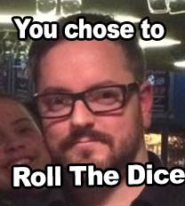

Team Dino/Pink
Abstract
Technology continues to evolve as new inventions are being introduced during this age. Though, we become more dependant on these technologies as technology is claimed to make our lives easier. The purpose of this website report is to address the usability of personal computers such as laptops improve an individual’s ability to retain information.
A study based in Auckland University of Technology shows majority of students from the Bachelors of Computers and Information Science paper believe long writing is the best method for note taking. It has been proven by the experiment conducted by the researching team. The students using long writing as their choice of note taking scored an average of 69.38% during the experiment. This can be compared with the average percentage of 62% scored by students using laptops as their choice of note taking.
Introduction
Our group has conducted an an experiment, testing the memory of our participants by allowing them to watch a 2-3 minute video containing interesting facts.
The following rules apply to our experiment:
- The participant shall watch the video once.
- This video has been slowed down to 70% to ensure a stable pace for participants to take in the information that is presented to them within the video
- Participants shall take down notes as they watch the video
- Participants will then take one minute to study their notes before they are taken away from them
- Participants will then take an online quiz based on the video they had just watched
- There is no time limit for the quiz
- There are 2 bonus questions to test how sharp the participants memory is
A survey is attached to the same online form where they will give feedback for the following questions:
- Have you seen this video before ?
- How did you take down your notes for this quiz?
- Were you able to keep pace with the video during note taking?
- Do you think you would have done the quiz better if you used the other way of taking down notes?
- In what way do you take down notes during lectures?
- How often do you take down notes during lectures?
- In which way do you prefer when studying for exams?
- Was the quiz hard?
Project Introduction
RollingDice

| vivian | broke | my code |
|---|---|---|
| yes | she | did |
| its | the | truth |
Fenced code blocks are like Stardard
Markdown’s regular code blocks, except that
they’re not indented and instead rely on
start and end wewalmead the
code block.
end my life
on
start chicken